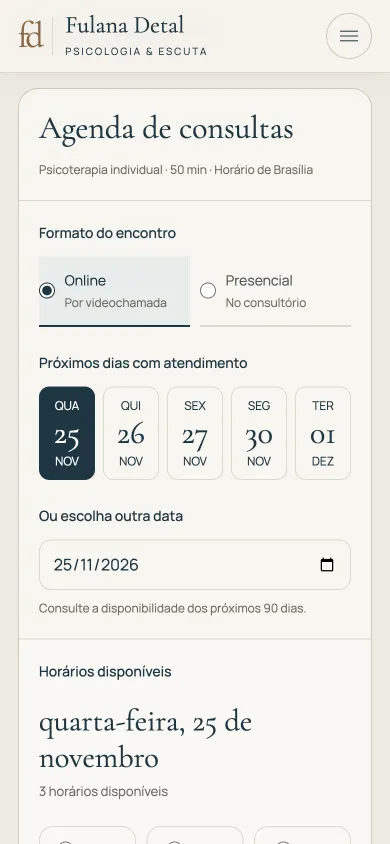

Projeto demonstrativo · Site
Site profissional com agendamento
Projeto demonstrativo que apresenta os serviços de uma profissional e permite experimentar um fluxo de agendamento pelo navegador.
Karin Silveira · Desenvolvimento de software
Apresente seu negócio, facilite o trabalho da sua equipe ou ofereça novas formas de atender seus clientes.
Desenvolvimento de projetos digitais pensados para o seu negócio e para as pessoas que vão utilizá-los.
Quem recebe uma indicação, procura seus serviços ou conhece sua empresa pelas redes sociais precisa encontrar informações para decidir se vale a pena entrar em contato.
Tenha um espaço próprio para apresentar seu trabalho, mostrar seus diferenciais, divulgar produtos e facilitar o atendimento.
Do primeiro site à reformulação de uma presença digital existente, a estrutura e as funcionalidades são definidas conforme os objetivos do seu negócio.
Todos os sites incluem um painel administrativo para que você possa editar os conteúdos previstos no projeto, sem precisar de conhecimentos de programação.
Informações espalhadas em planilhas, ferramentas que não atendem às suas necessidades e tarefas repetitivas podem dificultar a rotina de trabalho.
Um sistema personalizado pode reunir informações, organizar processos e oferecer funcionalidades específicas para sua equipe ou seus clientes.
O projeto também pode envolver novas funcionalidades, melhorias de interface e continuidade do desenvolvimento.
Um aplicativo pode oferecer aos seus clientes uma maneira prática de acessar conteúdos, acompanhar informações, realizar solicitações ou utilizar os serviços do seu negócio pelo celular.
Desenvolvimento de aplicativos para Android e iOS, desde novos projetos até a evolução de aplicações existentes.
Desenvolver meu aplicativo: solicitar proposta pelo WhatsApp (abre em nova aba)As etapas de testes, preparação e submissão ao Google Play e à App Store podem fazer parte do projeto.
A conversa inicial serve para entender seu negócio, seus objetivos e as necessidades de quem utilizará o projeto. A partir disso, podemos definir a estrutura, as funcionalidades e as tecnologias necessárias.
O desenvolvimento considera também a facilidade de uso, o carregamento, a acessibilidade e as possibilidades de evolução do produto.
Conversar sobre minha ideia pelo WhatsApp (abre em nova aba)Explore projetos publicados e conheça as funcionalidades, interfaces e decisões que fazem parte de seu desenvolvimento.

Projeto demonstrativo · Site
Projeto demonstrativo que apresenta os serviços de uma profissional e permite experimentar um fluxo de agendamento pelo navegador.


Projeto autoral · Portfólio
Portfólio autoral que reúne identidade visual, desenvolvimento web e experiências interativas em uma interface própria.
Entendimento da sua necessidade, dos objetivos do projeto e das pessoas que vão utilizá-lo.
Definição das funcionalidades, entregas, responsabilidades, investimento e prazo.
Construção do projeto e acompanhamento conforme as etapas combinadas, com espaço para os ajustes previstos na proposta.
Revisão final e disponibilização do projeto conforme as condições contratadas.
O investimento e o prazo dependem das funcionalidades, da complexidade e das necessidades do projeto. Essas condições são definidas na proposta, antes da contratação.
Não. Posso cuidar da contratação, configuração e gerenciamento desses serviços. Se preferir, você também pode contratá-los diretamente ou utilizar uma infraestrutura existente, desde que seja compatível com o projeto.
Sim. Todos os sites incluem um painel administrativo para edição dos conteúdos definidos no escopo.
O design da interface faz parte do desenvolvimento. A criação ou reformulação da identidade visual da marca é avaliada separadamente.
Os textos, fotografias, logotipos e demais conteúdos são fornecidos pelo cliente.
A preparação e a submissão às lojas podem integrar o projeto. As contas de desenvolvedor ficam em nome do cliente, com orientação para sua configuração. Taxas, requisitos e aprovação seguem as condições de cada plataforma.
Sim. A manutenção e o desenvolvimento de novas funcionalidades podem ser contratados separadamente, conforme a necessidade.
Conte um pouco sobre seu negócio, sua ideia ou o projeto que deseja melhorar.
Vamos avaliar as possibilidades e definir uma proposta adequada à sua necessidade.
Prefere e-mail? Escreva para kasilveira32